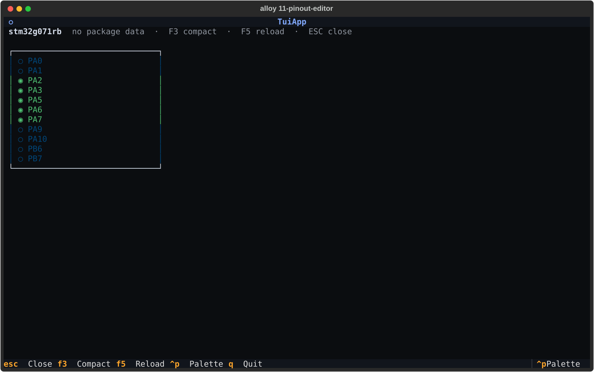
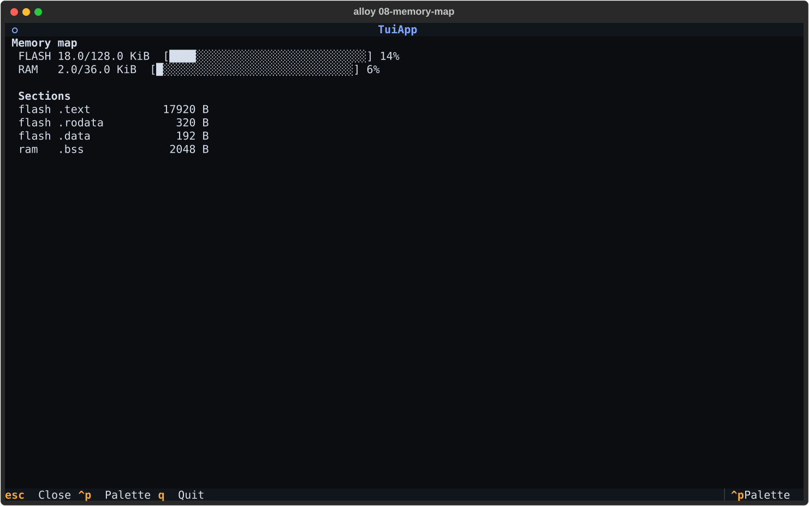

TUI screens#
alloy ui opens the terminal user interface — a full-screen Textual
application that lets you configure, build, and flash firmware without
typing individual commands. Every screen is also reachable from the
command palette (Ctrl+P) so keyboard-first workflows stay fast.
Pinout editor#
The pinout editor shows the device's package schematic with live pin assignment state, and lets you add peripherals interactively from the same screen.

What you see#
| Glyph | Colour | Meaning |
|---|---|---|
◉ |
green | Assigned — pin claimed by a peripheral in alloy.toml |
○ |
dim | Free — available for assignment |
◆ |
magenta | Candidate — legal pin for the signal currently being configured |
▣ |
yellow | Reserved — power, ground, or debug pad |
✗ |
red | Conflict — same pin claimed by two peripherals |
Adding a peripheral#
- Press one of the Add peripheral buttons at the bottom of the screen (UART, SPI, I2C, GPIO, Timer, ADC, CAN, USB, ETH).
- The Peripheral Add screen opens for the chosen kind — fill in the fields and press Ctrl+S to apply.
- On close,
alloy.tomlis updated and the schematic reloads automatically so the newly assigned pins turn green.
Keyboard reference#
| Key | Action |
|---|---|
| F3 | Toggle compact list ↔ schematic view |
| F5 | Reload alloy.toml from disk (pick up external edits) |
| ESC | Close and return to the previous screen |
Auto-discovery#
The editor walks up from the current working directory to find
alloy.toml. Run alloy ui from anywhere inside your project tree
and the editor opens the correct project automatically. If no project
is found a placeholder is shown with instructions.
Memory map#
After a successful build, the memory map screen shows flash and RAM usage as stacked bar charts, broken down by ELF section.

What you see#
FLASH 18.0/128.0 KiB [████░░░░░░░░░░░░░░░░░░░░░░░░░░] 14%
RAM 2.0/ 36.0 KiB [█░░░░░░░░░░░░░░░░░░░░░░░░░░░░░] 6%
Sections
flash .text 17920 B
flash .rodata 320 B
flash .data 192 B
ram .bss 2048 B
Capacities come from board.json (flash_size_bytes + sram_size_bytes).
Section sizes are read from the most-recently modified *.elf under
.alloy/build/ via arm-none-eabi-size.
Per-region erase#
alloy erase supports erasing specific flash regions instead of the
whole chip. Region aliases resolve via the device IR; raw address
ranges also work.
# Erase the whole chip (default)
alloy erase --auto
# Erase a named region (alias defined in the device IR)
alloy erase --region bootloader --auto
# Erase a literal address range
alloy erase --region 0x08000000-0x08010000 --auto
# Multiple regions in one command
alloy erase --region bootloader --region appslot-a --auto
# Dry-run: see the plan without erasing
alloy erase --region bootloader
Safety gates
Without --auto / --yes, the command shows the erase plan and
asks for confirmation in an interactive TTY. In CI always pass
--auto or the command will refuse to run on a non-TTY stdin.
Erase plan table#
Erase plan — board=nucleo_g071rb
region base size
─────────────────────────────────────────
bootloader 0x08000000 16.0 KiB
appslot-a 0x08004000 48.0 KiB
The table is printed before the confirmation prompt so you can verify the addresses before committing.
Monitor#
Stream UART output from the target directly to your terminal. The
port is auto-detected from the board's serial_globs in board.json.
alloy monitor # auto-detect port + baud from alloy.toml
alloy monitor --port /dev/cu.usbmodem1234
alloy monitor --baud 9600
alloy monitor --mode rtt # RTT via probe-rs (requires probe connected)
Press Ctrl+] to disconnect cleanly. On close, alloy prints the byte count, session duration, and last line received:
Auto-detect#
Port detection requires a [board] entry in alloy.toml with
serial_globs declared in the board's board.json. When multiple
ports match, the first is used and the others are listed so you can
override with --port.
ANSI stripping#
By default, ANSI escape sequences are stripped so the log stays
grep-friendly. Pass --ansi to preserve colour output:
Related commands#
| Command | What it does |
|---|---|
alloy ui |
Open the full TUI |
alloy monitor |
Stream UART / RTT bytes from the target |
alloy erase |
Erase flash (chip-wide or per-region) |
alloy reset |
Soft or hard reset via the debug probe |
alloy flash |
Flash the ELF and reset |
alloy add uart |
Add a UART peripheral to alloy.toml |
alloy boards <id> --pinout |
Read-only package schematic (no project needed) |